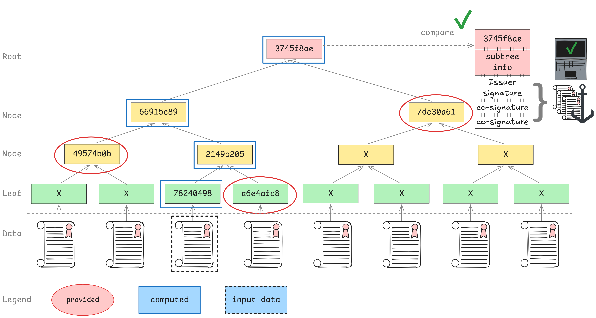
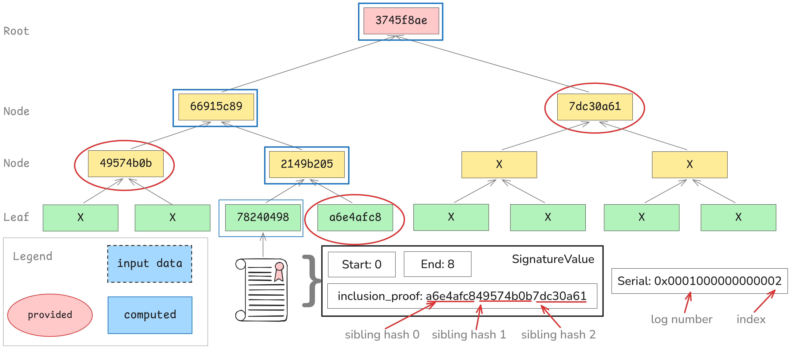
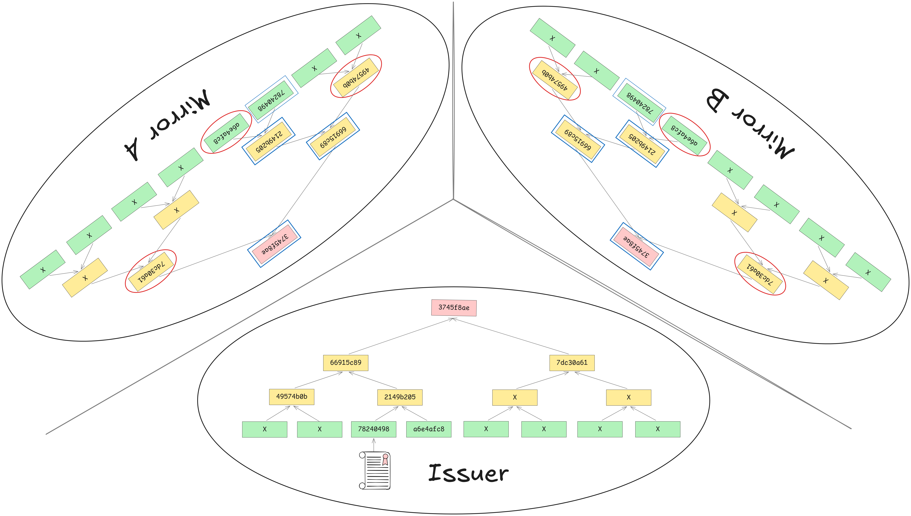

2026-11-19
I left off the last article with the following image
To be clear, the issue we’ll have in the future isn’t just one signature. It’s multiple signatures.
In the above graphic we saw a signature size increase of 33.6x, this gives you a rough idea of how much we should anticipate each of these signatures to grow. Your web browser does a whole lot of TLS handshakes each time it connects to a new site1.
It is worth calling out that the server’s public key is still carried in the TLS certificate and is still used to verify the server’s handshake signature. However, the certificate’s authentication and how we verify the certificate itself is trustworthy changes with MTCs.
Throughout this document I’ll be citing two primary resources. One is the MTC draft specification, this describes the underpinnings of Merkle Tree Certs. I’ll also be using the Chrome Root Program’s draft Quantum-resistant Root Program Policy (v0.4.0 at this time), while still a draft, this shows what the public PKI community is trending towards operationally2.
In traditional TLS, your OS, browser and occasionally other applications have a set of trusted root certificates. These root stores are managed by individual root programs that set strict guidelines for inclusion. I roughly cover how chaining from an end-entity certificate, to an intermediate and finally a root certificate works in an earlier article. The one sentence version of this is: Your browser has a list of certificates containing public keys, those public keys are used to validate chains of certificates that ultimately establish that signatures on end-entity certificates are valid.
MTCs retain the concept of a trust anchor, but use inclusion proofs to signed tree structures instead of direct signature chains on each certificate.

Certificates presented to the client can either be a Standalone MTC or a landmark-relative certificate. The specific mechanisms for these are described in further detail later, but for now you should know:
Which one is decided during the TLS handshake via a proposed TLS trust anchors extension. This advertises to the TLS server which landmarks the client trusts.
Unfortunately, subtrees aren’t added to a trust store automatically after a standalone MTC verification has succeeded. Instead, landmarks are periodically distributed to clients via out-of-band mechanisms. In the case of Chrome this will be Chrome’s Landmark Service7.
Section 8.2 of the draft RFC specifies two methods for clients to pass their list of landmarks they trust to a TLS server:
Single-Log Landmark Groups - This specifies passing landmark
information in a list where each CA’s landmarks are provided as follows:
{ CA_ID, landmarkGroups(2), log_number, latest_landmark }.
I’ll note that landmarkGroups(2) is an OID component and
not a function. This ends up looking something like this
schematically:
{ CAfoo, 2, Log#2, Landmark23 }
{ CAfoo, 2, Log#1, Landmark245 }
{ CAqux, 2, Log#4, Landmark42 }Each ID covers active landmarks up to the stated number for that CA/log. This allows the server to derive the set of landmarks the client can verify. From there they can figure out which subtrees are considered trustworthy.
Timestamped landmark groups - This specifies passing a
predefined trust-anchor group, which can be one or more CAs followed by
a version and tick number where
tick = (represented_time - start_time) / tick_duration.
This ends up looking like groupOID.version.tick. This tells
the server which landmarks in a group were active at the represented
time, so that it can determine whether to use standalone or
landmark-relative certificates.
Proofs are embedded into the signatureValue field of the
certificate8:
opaque TrustAnchorID<1..2^8-1>;
struct {
TrustAnchorID cosigner_id;
opaque signature<0..2^16-1>;
} Cosignature;
struct {
MTCLogEntryExtension extensions<0..2^16-1>;
uint48 start;
uint48 end;
opaque inclusion_proof<0..2^16-1>;
Cosignature signatures<0..2^24-1>;
} MTCProof;
Cosignatures are omitted in the case of landmark-relative
certificates. Additionally, the signatureAlgorithm in the case of MTCs
is id-alg-mtcProof. The inclusion_proof field
is a concatenated list of sibling hashes. Note that the size of each
hash is derived from the hash function used. Placement in the tree is
derived from the leaf index (derived from the serial number) and the
start and end fields (denoting the range of the subtree where the index
lies)9.
ceiling(log_2n) for reference that’s at worst 30 hashes
(960 bytes assuming SHA-256) for a tree of 1,000,000,000 leaves. In
practice 1,000,000,000 leaves in a subtree feels unlikely.Inclusion proofs establish membership in a tree, but they don’t establish that everyone sees the same tree. Cosigning and mirroring help bridge that gap by following consistent log histories and signing subtree information. Unlike the existing CT scheme, Chrome’s proposed policy dictates that independent mirrors verify log consistency, retain publicly accessible copies and cosign checkpoints. Certificate authentication is now tied to cosigner attestation rather than a single CA’s signature.

Different cosigners could still be shown different histories, however, client policies and monitors comparing checkpoints could help prevent or expose conflicting views. Exact mechanisms for this have not yet been specified.
Hit F12 go to the network pane and load reddit. Look at the number of domains your browser is accessing to load just a single page! This isn’t quite fair because of session resumption and connection reuse, but think of the worst case scenario!↩︎
I’m using chrome’s root program as the example here because they have been spearheading this work. The community could ultimately go in a different direction. It’s also worth noting that apple has publicly announced that they are moving in a similar direction, but they haven’t made as many details available yet.↩︎
CA behavior is in section 5 of the draft and Chrome Root Program expectations are in section 2 of their draft policy↩︎
Client behavior is specified in section 7 of the draft↩︎
Monitor behavior is described in section 10 and 12 of the draft↩︎
Revocation mostly doesn’t change with MTCs, it still takes place via OCSP/CRL checking. However, the MTC CA extension does contain a minSerial and maxSerial field. Certificates outside of that range are rejected.↩︎
Seen here reading between the lines a bit it’s implied this will distribute landmarks to chrome on a regular basis, but it doesn’t outright say that.↩︎
start is inclusive, end is exclusive↩︎